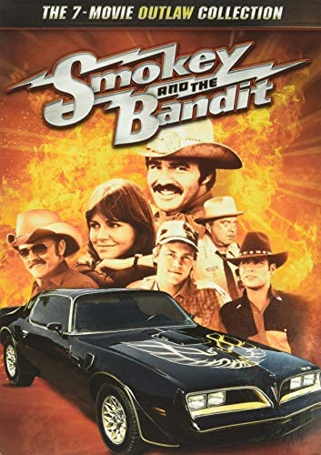

Nu blåser vi snuten - Engelska: Smokey and the bandit
Är, enligt IMDB, den mest populära filmen som gjorts.
Detta är även vad MovieTimes samlade recencenter anser.

De rika texasborna Big Enos Burdette (Pat McCormick) och hans son Little Enos (Paul Williams) försöker hitta en lastbilschaufför som är villig att smuggla öl till Georgia, då deras vanliga chaufför blivit gripen. Bo "Bandit" Darville (Burt Reynolds) och hans kompis Cledus "Snowman" Snow (Jerry Reed), blir tillfrågade.
Uppdraget består i att hämta 400 lådor med Coors-öl i Texarkana i Texas och smuggla tillbaka dem till Atlanta, fram och tillbaka[förtydliga] på 28 timmar.
Recension
MovieTimes recencent Benny Andersson tycker att detta är en mycket bra film.
Det är spännande och många oväntade saker sker.
Skådespelare med Burt Reynolds och Jerry Reed i spetsen är helt fantastiska i sina roller och bidrar starkt till filmens Story.
Elaka fångar och även Elaka fångvaktare gör att det hela tiden händer något spännande.
Pro tip: Se filmen!